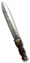

Heyday

Prisoner's Anguish
Dirk
Damage: 3-9
Required Level: 14
+150-200% Enhanced Weapon Damage
+6-10 to Maximum Damage
+25% Deadly Strike
+4-7% Life stolen per hit
+1-3 to Bone Armor (class only)
+1-3 to Poison Strike (class only)
Unique Dagger
Prisoner's Anguish
- Type
- Dagger
- Base
- Dirk
- Tier
- Normal
- Required level
- 14
- Item level
- 12
- Required dexterity
- 25
- Max sockets
- 1